Esc/G grid · S sidebar · N notes · F full · ↑↓ nav
DEEP LEARNING · GROUP 2 · arXiv:2206.14718v4
LViT: Language meets Vision Transformer in Medical Image Segmentation
Khi mô hình đọc được cả ảnh lẫn chú thích của bác sĩ, nó phân vùng tổn thương chính xác hơn — và cần ít nhãn hơn hẳn.
25MS23301Bui Nguyen Quoc Toan
25MSA23259Le Nguyen Gia Bao
25MS23271Ma Ngoc Long Bao
25MS23281Nguyen Thi Huong
25MS23297Pham Xuan Thang
Xin chào thầy và các bạn. Nhóm 2 trình bày paper LViT — "Language meets Vision Transformer in Medical Image Segmentation". Ý tưởng cốt lõi rất gọn: ảnh y tế thường mờ, ranh giới tổn thương khó thấy; nếu cho mô hình đọc thêm một câu mô tả của bác sĩ, nó phân vùng chính xác hơn và cần ít nhãn hơn. Môn Deep Learning, giảng viên thầy Viet-Tuan Le.
TABLE OF CONTENT
Nội dung trình bày
1Motivation & Data Survey
2Double-U Architecture & CNN
3Vision-Language Transformer
4Pixel Attention & Loss Functions
5Experiments & Gaps
Nội dung gồm năm phần: động lực và khảo sát dữ liệu; kiến trúc Double-U và nhánh CNN; Vision-Language Transformer; Pixel Attention và các hàm loss; cuối cùng là thực nghiệm và các hướng mở rộng.
VẤN ĐỀ
Ảnh y tế mờ, ranh giới nhòe — vision đơn thuần hay đoán nhầm.
Ảnh đời thường sắc nét, cạnh rõ. Ảnh y tế thì low contrast, nhiều nhiễu, blurred boundaries — mô hình chỉ nhìn ảnh dễ nhầm tổn thương với mạch máu hay xương sườn.
Low visibility — độ tương phản thấp, ranh giới nhòe (ví dụ vùng mờ COVID-19).
Context blindness — pure-vision hay nhầm lesion với cấu trúc giải phẫu.
Annotation cost — nhãn của chuyên gia đắt đỏ, nghẽn cổ chai dữ liệu.
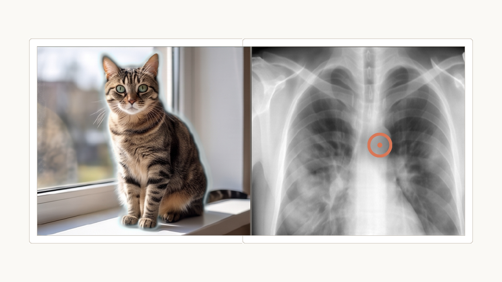
Natural image — cạnh sắc, dễ tách · Medical image — ● ranh giới tổn thương mờ, khó tách
Bài toán segmentation ảnh y tế khó ở ba chỗ. Một, ảnh mờ, tương phản thấp, ranh giới tổn thương nhòe. Hai, mô hình chỉ-nhìn-ảnh bị "mù ngữ cảnh" — dễ nhầm vùng bệnh với mạch máu, xương. Ba, nhãn phải do bác sĩ vẽ, rất đắt. Đây là ba lý do khiến LViT muốn kéo thêm ngôn ngữ vào để làm "tín hiệu gợi ý".
Ý TƯỞNG GIẢI PHÁP
Giải pháp: cho mô hình đọc thêm một câu mô tả của bác sĩ.
Cả ba trở ngại đều bắt nguồn từ việc vision đơn thuần thiếu ngữ cảnh. LViT bổ sung language như một modality dẫn hướng: text mô tả vị trí, số lượng, tính đối xứng của tổn thương — tín hiệu ngữ nghĩa gần như miễn phí.
Neo ngữ nghĩa — text ràng buộc vùng mô hình cần chú ý, giảm nhầm lẫn giải phẫu.
Giảm phụ thuộc nhãn — hướng dẫn bằng ngôn ngữ bù cho sự khan hiếm mask.
Nền tảng triển khai — phần còn lại của báo cáo là cách nhét ngôn ngữ vào kiến trúc segmentation.
Trước khi đi vào chi tiết, đây là ý tưởng cốt lõi. Cả ba trở ngại vừa nêu đều do vision đơn thuần thiếu ngữ cảnh. LViT bổ sung ngôn ngữ như một modality dẫn hướng: một câu mô tả của bác sĩ — vị trí, số lượng, tính đối xứng của tổn thương — đóng vai trò tín hiệu ngữ nghĩa gần như miễn phí, neo mô hình vào đúng vùng cần phân vùng và giảm phụ thuộc vào nhãn. Toàn bộ phần còn lại của báo cáo là cách hiện thực ý tưởng này trong kiến trúc.
DỮ LIỆU
Kiểm chứng trên ba bộ dữ liệu rất khác nhau — để chứng minh mô hình tổng quát.
Không chỉ chạy trên một loại ảnh. Ba modality khác nhau về bản chất: X-quang phẳng, CT cắt lớp, và ảnh vi tế bào — kiểm chứng tính tổng quát của kiến trúc across modalities.
9,258
QaTa-COV19 · X-ray
Ảnh X-quang COVID-19, đối tượng chính (flagship).
2,729
MosMedData+ · CT
Lát cắt CT, tổn thương ground-glass khó thấy.
286
MoNuSeg / ESO-CT
Ảnh vi tế bào & khối u — chứng minh khả năng mở rộng.
Nhóm đánh giá trên ba bộ dữ liệu rất khác nhau về bản chất. QaTa-COV19 là X-quang phổi, 9258 ảnh — bộ chính. MosMedData+ là CT, 2729 lát cắt, tổn thương ground-glass mờ hơn nhiều. MoNuSeg và ESO-CT nhỏ hơn, ảnh tế bào và khối u, để chứng minh kiến trúc scale được từ macro tới micro. Đa dạng modality là cách chứng minh mô hình không "học vẹt" một loại ảnh.
BENCHMARK CHÍNH
QaTa-COV19: bộ X-quang COVID lớn nhất, gắn thêm text mô tả có cấu trúc.
Đóng góp: lần đầu ghép structured text annotation của chuyên gia vào bộ X-quang COVID lớn — biến nó thành sân chơi vision-language thực thụ.
Chia dữ liệu — 5716 train · 1429 val · 2113 test.
Text có cấu trúc — mô tả tính đối xứng, số vùng, vị trí giải phẫu.
Semantic anchoring — chuẩn hoá câu chữ để chuyển thành tensor nhất quán.
Ví dụ text annotation: "Bilateral pulmonary infection, two infected areas, lower left lung and lower right lung."
QaTa-COV19 là benchmark chính. Điểm hay: nhóm tác giả gắn thêm text mô tả có cấu trúc do chuyên gia soạn — mô tả nhiễm đối xứng hay không, mấy vùng, ở thùy phổi nào. Chia 5716/1429/2113. Câu mô tả được chuẩn hoá (semantic anchoring) để chuyển sang tensor nhất quán. Đây chính là cái biến một bộ ảnh thường thành bộ vision-language.
TỔNG QUÁT HOÁ
Chuyển từ X-quang phẳng sang CT — fusion vẫn giữ vững.
MosMedData+ khó hơn: ground-glass opacity tương phản rất thấp. Cùng một kiến trúc, không đổi phần cứng hay batch size, vẫn thích ứng được với texture CT.
2,729 lát cắt — mô tả không gian 3D ánh xạ vào ảnh 2D.
Encoder đồng nhất — dùng lại nguyên vẹn, chứng minh tính bền vững của text-vision fusion.
Để chứng minh kết quả không đặc thù cho X-quang, nhóm đánh giá tiếp trên MosMedData+, là ảnh CT. CT khó hơn vì tổn thương ground-glass opacity có độ tương phản rất thấp. Điểm đáng nói: dùng lại nguyên vẹn kiến trúc, không chỉnh phần cứng hay batch size, mà text-vision fusion vẫn hoạt động ổn định — cho thấy cơ chế fusion không phụ thuộc vào một modality cụ thể.
CẤU HÌNH HUẤN LUYỆN
Kiến trúc lai CNN–Transformer, tối ưu chặt: 2000 epoch trong ~10 giờ.
Dù đầu vào đa modality (ảnh + text) làm tăng chi phí tính toán, kiến trúc vẫn hội tụ trong 2000 epoch với chi phí hợp lý. Dùng early stopping để chống overfit.
Về cấu hình: hai card NVIDIA V100 32GB, batch 24, learning rate khởi tạo 3e-4 hoặc 1e-3, dùng Cosine Annealing with Warm Restarts. Chạy tối đa 2000 epoch nhưng có early stopping sau 50 epoch không cải thiện để tránh overfit. Toàn bộ gói gọn khoảng 10 giờ compute. Con số này để thấy mô hình không "khủng" về tài nguyên.
DATA LOADER
Đồng bộ ảnh và text trước khi vào mô hình — căn khớp cặp image–text từng mẫu một.
Data loader phải căn khớp hai luồng: ảnh (spatial) và text (semantic). Chỉ cần một mẫu bị lệch cặp là tín hiệu giám sát sai lệch.
Dual-stream — lớp ImageToImage2D khớp thư mục ảnh với Train_text.xlsx, zero misalignment.
Dynamic padding — chèn token EOF XXX để mọi câu text về cùng độ dài (10 token).
Joint augmentation — xoay/lật chỉ áp cho ảnh, giữ text anchor bất biến.
Trước khi vào mô hình, data loader phải đồng bộ hai luồng. Lớp ImageToImage2D đảm bảo mỗi ảnh khớp đúng dòng text trong Train_text.xlsx. Các câu text có độ dài khác nhau nên được pad bằng token EOF XXX về cùng độ dài 10 token. Augmentation hình học (xoay, lật) chỉ áp cho ảnh, còn text giữ bất biến làm semantic anchor. Nếu cặp image–text bị lệch, tín hiệu giám sát sẽ sai lệch hoàn toàn.
KIẾN TRÚC · TỔNG QUAN
Double-U: một nhánh CNN chữ U song song một nhánh ViT chữ U.
Hai nhánh chạy song song: CNN mô hình hoá đặc trưng cục bộ (biên tổn thương), Transformer mô hình hoá phụ thuộc toàn cục và tích hợp tín hiệu text. Chúng trao đổi đặc trưng tại từng scale.
Song song — CNN trích đặc trưng & vẽ mask; ViT trộn ảnh + text.
Đối xứng 4 tầng — cả hai nhánh có 4 scale down/up-sampling.
Tương tác liên tục — đặc trưng ViT quay về CNN qua PLAM.
Đây là trái tim của paper — kiến trúc Double-U. Hai chữ U lồng nhau: một nhánh CNN và một nhánh ViT, cùng có bốn tầng down và up đối xứng. CNN lo phần cục bộ — trích đặc trưng ảnh và vẽ mask cuối. ViT lo phần toàn cục — trộn ảnh với text (đầu vào có BERT-Embed). Hai nhánh trao đổi qua CNN-ViT Interaction Module, trong đó có PLAM. Hình này là Figure 2a của paper.
CÔNG THỨC · ViT BLOCK
Năm công thức gói gọn cách nhánh ViT hoạt động.
Mỗi ViT block = tự chú ý (MHSA) + residual, rồi MLP + residual. Text được cộng vào ngay từ đầu.
Dấu + tô đậm: đây là early additive fusion — text cộng thẳng vào ảnh.
Fig. 2(a) — LViT Double-U (nhánh CNN + nhánh ViT)
Năm công thức mô tả nhánh ViT, đọc theo thứ tự. (1) Đầu vào tầng ViT đầu tiên là ảnh cộng text đã qua CTBN. (2) Patch-embedding của đặc trưng CNN. (3) và (4) là chuẩn của một ViT block — MHSA cộng residual, rồi MLP cộng residual. (5) Các tầng sau: đặc trưng ViT tầng trước cộng với ảnh. Điểm chú ý là dấu cộng — LViT trộn hai modality bằng phép cộng thô, không phải cross-attention.
TRỰC GIÁC
CNN nắm receptive field cục bộ; Transformer nắm phụ thuộc toàn cục.
Convolution có receptive field cố định — giỏi trích đặc trưng cục bộ (biên, texture) nhưng thiếu ngữ cảnh toàn cục. Self-attention tính tương đồng trên toàn ảnh, neo được ngữ nghĩa giải phẫu toàn cục.
Convolution: bất biến dịch chuyển & tỉ lệ, nhưng tầm nhìn cục bộ.
Self-attention: nhìn toàn cục, tìm quan hệ giữa mọi vị trí.
Vì sao đã có CNN rồi còn cần Transformer? Về mặt toán, convolution Y(x)=f(x)*M(x) bất biến dịch chuyển và tỉ lệ, rất giỏi trích đặc trưng cục bộ, nhưng receptive field hữu hạn nên chỉ bao phủ một vùng nhỏ — hạn chế với ranh giới mờ. Self-attention softmax(QKᵀ/√d)V tính tương đồng trên toàn ảnh, mô hình hoá được phụ thuộc dài và neo ngữ nghĩa giải phẫu toàn cục. Transformer bổ sung đúng thành phần ngữ cảnh toàn cục mà CNN thiếu.
NHÁNH CNN
Nhánh CNN: bộ nhận ảnh thô chính và engine vẽ mask cuối cùng.
Main Takeaway: Nhánh CNN là bộ tiếp nhận ảnh thô chính của toàn hệ thống, đồng thời là engine tạo ra segmentation mask ở đầu ra.
Key Points
Source & Destination — nhận CT/X-quang thô ở đầu vào, xuất pixel mask dự đoán ở đầu ra.
Downward Path — DownCNN ×4 → Bottleneck: thu nhỏ kích thước không gian, tăng độ sâu đặc trưng.
Upward Reconstruction — UpCNN ×4: upsample kèm concat skip-connection để dựng lại bản đồ độ phân giải cao từng tầng một.
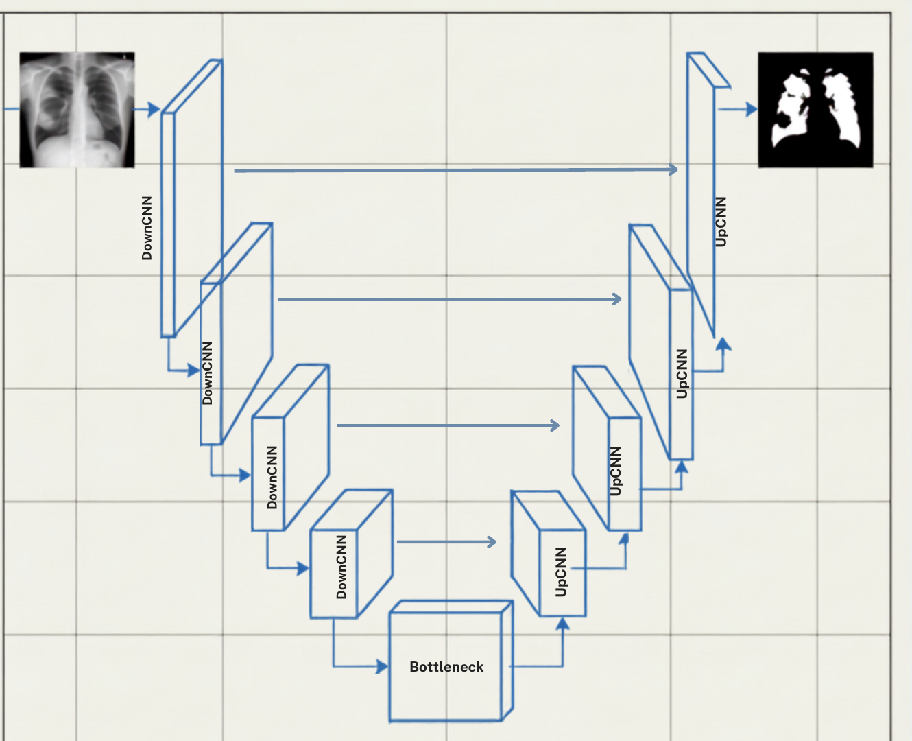
Nhánh CNN là khung U-Net encoder–decoder. Nó nhận ảnh thô và chịu trách nhiệm xuất mask cuối. Đường đi xuống — DownCNN bốn lần tới Bottleneck — giảm độ phân giải không gian, tăng độ sâu kênh. Đường đi lên — UpCNN bốn lần — upsample và ghép skip-connection để dựng lại độ phân giải cao. CNN là nhánh tạo dự đoán cuối, sau khi đã nhận đặc trưng toàn cục do nhánh ViT bổ trợ.
DOWNBLOCK
Bên trong CNN DownBlock: ConvBatchNorm + MaxPool tuần tự.
Main Takeaway: Dữ liệu thị giác được cô đặc và chuẩn hoá dần bằng chuỗi ConvBatchNorm + MaxPool lặp lại qua từng tầng.
Deepening Features — số kênh nhân đôi qua từng tầng: 64 → 128 → 256.
Spatial Downsampling — MaxPool giảm nửa kích thước không gian, lọc nhiễu và giữ lại hình học lõi.
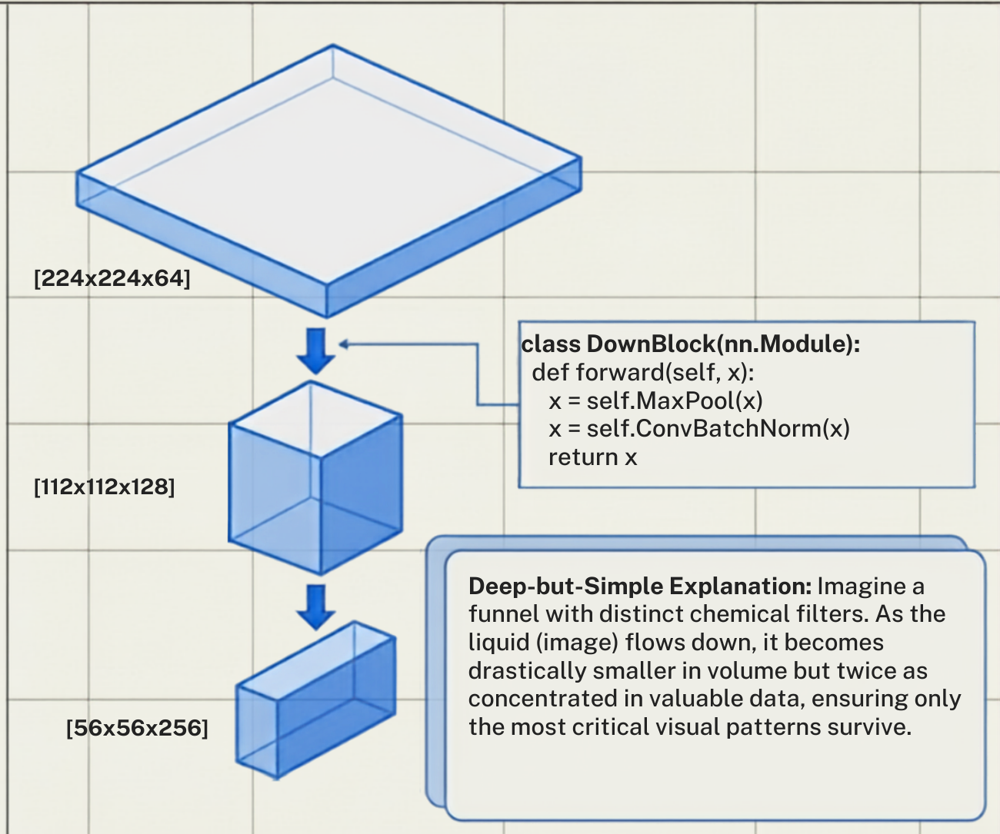
Đi sâu vào một DownBlock ở mức code. Mỗi block dùng chuỗi Conv2d → BatchNorm → ReLU rồi MaxPool. Độ phân giải không gian giảm một nửa mỗi tầng — 224 xuống 112 xuống 56 — trong khi số kênh tăng gấp đôi: 64, 128, 256. Đây là đánh đổi kinh điển của encoder: giảm chiều không gian để tăng độ sâu và mức trừu tượng của biểu diễn đặc trưng.
TEXT MODULE
Nén text bằng bốn lớp Conv1d để khớp bốn visual scale.
Main Takeaway: Bốn lớp Conv1d nén dần embedding BERT 768 chiều để khớp với bốn scale ảnh trong nhánh visual.
Key Points
The Dimensionality Problem — BERT xuất vector 768-dim, quá lớn để merge trực tiếp vào kênh ảnh.
The Conv1d Solution — text đi tuần tự từ text_module4 xuống text_module1.
Progressive Compression — 768 → 512 → 256 → 128 → 64, đưa biểu diễn text về đúng số kênh của từng scale ảnh.
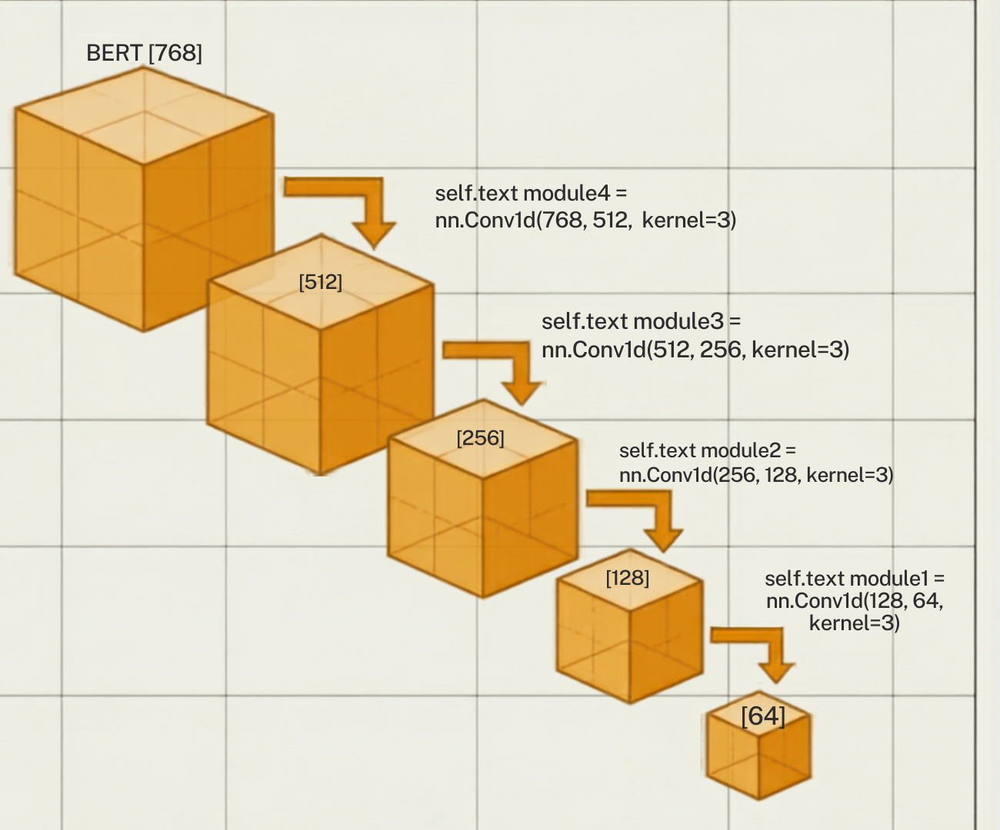
BERT xuất vector text 768 chiều — quá lớn để trộn thẳng vào đặc trưng ảnh ở giai đoạn đầu. Nên có bốn lớp Conv1d nén dần: 768 xuống 512, 256, 128, rồi 64. Mỗi mức tương ứng số kênh của một scale trong nhánh ảnh. Việc căn khớp dimensionality này là điều kiện cần để phép cộng fusion ở các tầng hợp lệ về mặt tensor.
CĂN KHỚP
Căn khớp modality ở bốn scale: từ high-res edges tới deep semantics.
Main Takeaway: Channel reduction giúp text được inject vào cả high-res edges lẫn deep semantic features của ảnh.
High-Res Alignment — Scale 1: ảnh high-res × text nén còn 64 channels (cạnh chi tiết).
Deep Semantic Alignment — Scale 4: ảnh low-res trừu tượng × text 512 channels.
Perfect Fusion — Transformer cross-attention không lệch tensor ở mọi điểm fusion.
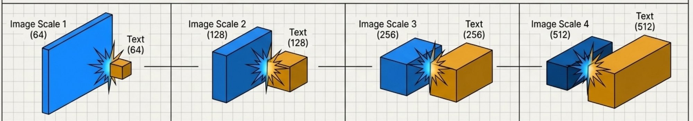
Việc nén text không tuỳ tiện — nó để căn khớp bốn scale ảnh. Scale 1: ảnh độ phân giải cao ghép với text nén xuống 64 kênh, phục vụ đặc trưng biên chi tiết. Scale 4: ảnh độ phân giải thấp, trừu tượng, ghép với text 512 kênh giàu ngữ nghĩa. Nhờ căn khớp dimensionality này mà Transformer fuse được hai modality mà không lệch tensor.
PATCH EMBEDDING
Biến ảnh 2D thành chuỗi token 1D cho self-attention.
Chia ảnh thành lưới patch ở nhiều độ phân giải (16 / 8 / 4 / 2), rồi chiếu mỗi patch thành một embedding 1D. Ảnh trở thành chuỗi token để Transformer xử lý.
Patch sizes — 16×16, 8×8, 4×4, 2×2 theo 4 tầng.
Flatten — patch 2D → embedding 1D [1, N, C].
Sequence tokens — chuỗi token đưa vào self-attention.
Self-attention không nhận ảnh 2D trực tiếp — nó cần một chuỗi token. Nên ảnh được chia thành patch ở các kích thước 16, 8, 4, 2 ứng với bốn tầng, rồi mỗi patch chiếu thành một embedding 1D, tạo chuỗi [1, N, C]. Ảnh 224 với patch 16 cho khoảng 196 token. Đây chính là bước patch embedding chuẩn của Vision Transformer, áp dụng ở nhiều scale.
LViT-TINY
Chỉ một tầng Transformer mỗi mức — nhỏ mà vẫn mạnh.
Thay vì ViT chuẩn 12 tầng, LViT-Tiny dùng đúng depth = 1 mỗi độ phân giải — giảm mạnh số tham số và overhead, đồng thời hạn chế overfit trên dữ liệu y tế quy mô nhỏ.
1
Transformer layer / level
Bỏ ViT chuẩn 12 tầng — giảm overhead, chống overfit.
29.7M
Parameters
Rất gọn so với LAVT 118.6M.
83.66%
Dice · QaTa full
Cao mà vẫn nhẹ.
⚠️ Lưu ý thực tế: Config ghi num_heads = 4, nhưng trong Vit.py giá trị này bị hardcode thành 8 — số head thực khi chạy là 8.
LViT-Tiny là bản gọn. Thay vì ViT tiêu chuẩn 12 tầng cho mỗi mức, nó dùng đúng một tầng — depth bằng 1. Nhờ vậy chỉ 29.7 triệu tham số mà vẫn đạt Dice 83.66% trên QaTa, đồng thời tránh overfit trên dữ liệu y tế nhỏ. Một lưu ý khi đọc code: file config ghi num_heads là 4, nhưng trong Vit.py con số bị hardcode thành 8 — nên số head thực tế khi chạy là 8, không phải 4.
CTBN
CTBN: căn text về cùng không gian đặc trưng với ảnh trước khi cộng.
CTBN (Conv–BatchNorm) đưa text về đúng số kênh và phân phối thống kê của đặc trưng ảnh, để phép cộng ở bước sau hợp lệ và ổn định.
Vai trò — chuẩn hoá text về cùng không gian đặc trưng với ảnh.
Nhờ đó — bước fusion chỉ cần một phép cộng, không cần cơ chế trộn phức tạp.
CTBN là cầu nối để phép cộng ở bước sau hoạt động được. Nó là một khối Conv kèm BatchNorm, đưa vector text về đúng số kênh và đúng phân phối thống kê của đặc trưng ảnh. Khi hai modality đã cùng không gian đặc trưng, một phép cộng là đủ để fuse — không cần cross-attention tốn kém. CTBN chính là mắt xích khiến early additive fusion khả thi.
⭐ ĐIỂM CỐT LÕI · FUSION
Trộn hai modality bằng một phép cộng — không cần cross-attention.
Fusion đạt được "thanh lịch" bằng cộng tensor trực tiếp, bỏ qua gánh nặng bộ nhớ của cross-attention.
Core execution: Vit.py:L178 — x = x + self.CTBN3(text)
Đây là điểm cốt lõi của LViT, nhớ kỹ. Fusion giữa ảnh và text chỉ là một phép cộng: x bằng x cộng CTBN3 của text, đúng dòng 178 trong Vit.py. Câu hỏi hay: sao cộng thô lại đủ, không cần cross-attention? Vì ảnh y tế có vị trí giải phẫu gần như cố định — phổi luôn ở vị trí phổi. Text chỉ cần đẩy đặc trưng theo một hướng ngữ nghĩa chung là đủ gợi ý, không cần ánh xạ từng chữ tới từng pixel. Đó là lý do early additive fusion vừa nhẹ vừa hiệu quả.
RECONSTRUCT
Chuyển chuỗi token đã xử lý trở lại biểu diễn không gian 2D.
Module Reconstruct chuyển chuỗi 1D đa modality về lại bản đồ không gian 2D, để bàn giao cho nhánh CNN.
Reshape — mảng 1D → ma trận không gian 2D.
1×1 Conv — căn số kênh khớp với nhánh CNN song song.
Scale up — dựng lại độ phân giải (vd 28×28, 56×56).
Sau khi ViT xử lý ở dạng chuỗi 1D, ta phải chuyển nó về biểu diễn không gian 2D để nhánh CNN sử dụng. Module Reconstruct làm ba việc: reshape chuỗi thành feature map 2D, dùng 1x1 Conv căn số kênh cho khớp nhánh CNN, và upsample lên đúng độ phân giải như 28x28 hay 56x56. Đây là bước nghịch đảo của patch embedding, đưa token sequence trở lại grid không gian.
U-Net truyền thống — chỉ concat trực tiếp đặc trưng CNN cục bộ (x_i) → dư thừa nhiễu nền ở các tầng nông.
Chi tiết không gian cục bộ (CNN Encoder — x_i)
Ngữ cảnh toàn cục (Transformer — y_i)
Dẫn hướng ngữ nghĩa ngôn ngữ (Text — text_i)
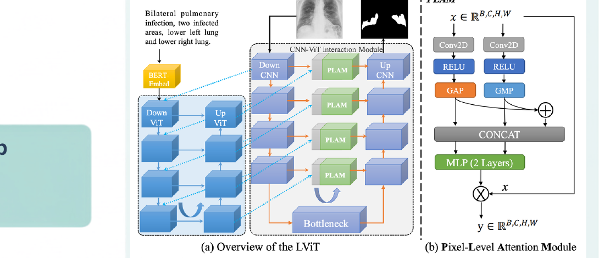
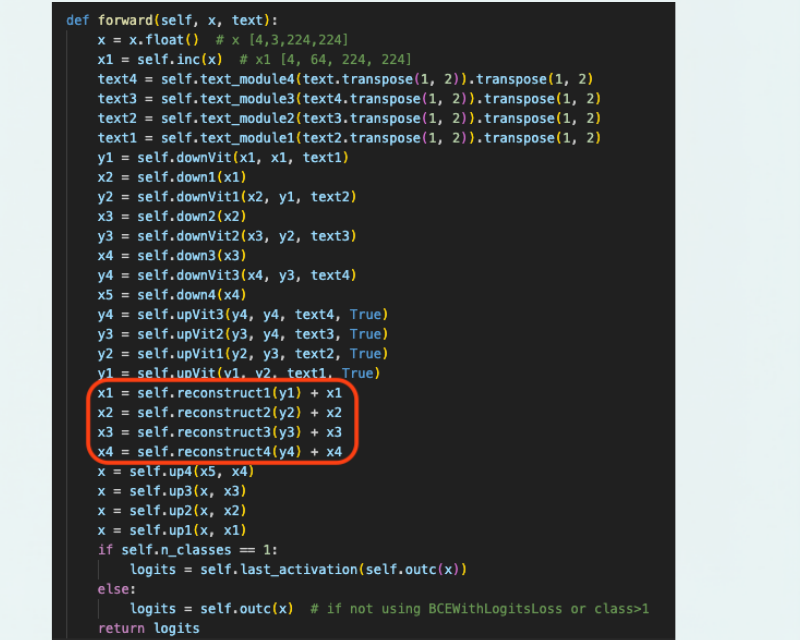
Slide này nêu đột phá của LViT tại skip-connection. Công thức: Skip_Connection bằng Reconstruct(y_i) cộng x_i. U-Net truyền thống chỉ concat trực tiếp đặc trưng CNN cục bộ x_i, nên các tầng nông dư thừa nhiễu nền. LViT hợp nhất ba nguồn tại skip: chi tiết không gian cục bộ từ CNN Encoder (x_i), ngữ cảnh toàn cục từ Transformer (y_i), và dẫn hướng ngữ nghĩa từ Text (text_i). Trong code forward(), bốn dòng x1..x4 = reconstruct(y)+x (khoanh đỏ) chính là phép hợp nhất này.
PLAM · PIXEL-LEVEL ATTENTION
PLAM: bộ lọc nhiễu thông minh tại Skip Connection.
Pixel-Level Attention Module (PLAM): Bộ lọc nhiễu thông minh tại Skip Connection — bù đặc trưng cục bộ mà ViT bỏ sót, kết hợp GAP + GMP lấy cảm hứng từ CBAM.
Bước 2 · Bottleneck MLP — chấm điểm quan trọng cho mỗi pixel → [B,1,H,W].
Bước 3 · Noise Suppression — nhân trọng số vào feature map gốc: y = x_output * x.
Lưu ý — code khác hình: Figure vẽ GAP/GMP (gộp theo không gian). Nhưng CODE thực gộp theo kênh — torch.mean/max(x, dim=1) → tạo trọng số pixel-level thật sự, không phải channel-level như hình gợi ý.
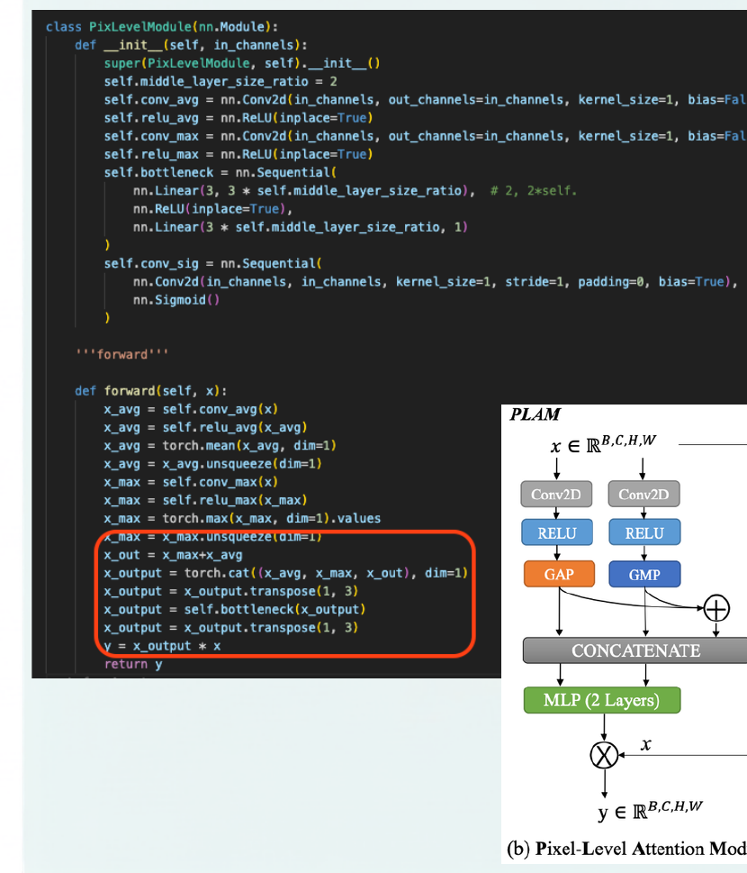
PLAM là bộ lọc nhiễu ở skip-connection, cảm hứng từ CBAM, để bù phần cục bộ mà ViT bỏ sót. Ba bước: gộp đặc trưng, chấm điểm quan trọng cho từng pixel, rồi nhân trọng số ngược lại vào feature map — y bằng x_output nhân x. Một chi tiết đáng lưu ý: hình trong paper vẽ GAP và GMP (gộp theo không gian), nhưng đọc code thì torch.mean và torch.max chạy theo dim bằng 1 (gộp theo kênh) — cho ra trọng số cấp pixel thật sự. Đây là điểm code khác hình.
DECODER · UpblockAttention
Decoder block: nơi PLAM dẫn đường tới mask đầu ra.
Mỗi UpblockAttention giải mã theo 3 bước, lọc skip-connection qua PLAM trước khi ghép — phục hồi độ phân giải từ 14×14 lên 224×224.
Bước 1 · Upsample — phóng to đặc trưng tầng dưới ×2 → up.
Bước 2 · Concat — ghép đặc trưng đã lọc PLAM (skip_x_att) với up theo channel (dim=1).
Bước 3 · nConvs — trộn qua 2× Conv2d→BN→ReLU, giảm nửa số kênh.
Đây là khối giải mã UpblockAttention, phần bù cho slide PLAM. Ba bước: một, upsample đặc trưng tầng dưới lên gấp đôi. Hai, lọc skip-connection qua PLAM thành skip_x_att rồi concat với up theo chiều kênh. Ba, trộn qua hai khối Conv2d–BatchNorm–ReLU, giảm nửa số kênh. Lặp up4 xuống up1 để phục hồi độ phân giải từ 14×14 lên 224×224, cuối cùng Conv 1×1 và Sigmoid cho ra bản đồ xác suất [B, n_classes, 224, 224].
Pillar 1 — EPI (Exponential Pseudo-label Iteration): với dữ liệu chưa nhãn, cập nhật nhãn giả qua trung bình động EMA, giữ 99% lịch sử ổn định để tránh sụp đổ đột ngột và nhãn nhiễu.
Giữ 99% lịch sử ổn định → pseudo-label không dao động mạnh giữa các vòng.
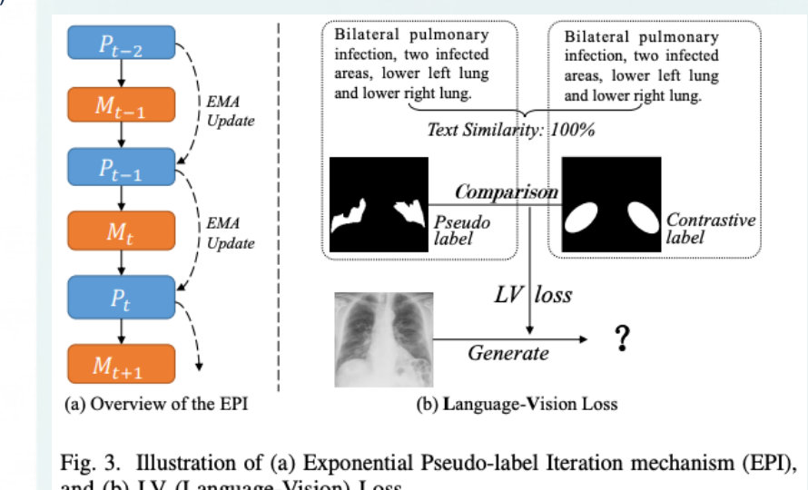
EPI là cơ chế bán giám sát để tận dụng ảnh chưa có nhãn. Ý tưởng: sinh nhãn giả rồi cập nhật nó bằng trung bình động EMA với beta 0.99 — nghĩa là mỗi vòng giữ lại 99% nhãn cũ ổn định, chỉ hé 1% cho dự đoán mới. Nhờ đó pseudo-label không nhảy loạn hay nhiễm nhiễu qua các epoch. Hình bên là Figure 3 của paper, phần a minh hoạ chuỗi cập nhật EMA.
PILLAR 2 · LV LOSS · CONTRASTIVE
LV Loss (Contrastive): dùng độ giống của text để gợi vị trí cho ảnh chưa nhãn.
Pillar 2 — LV Loss: dùng structured text similarity (Cosine Sim) giữa ảnh unlabeled và labeled; text giống nhau → tìm Contrastive Label (mask_c) làm tham chiếu.
Vì sao chỉ dùng cho dữ liệu chưa nhãn? Contrastive label chỉ cho gợi ý vị trí thô. Dữ liệu đã có ground-truth tuyệt đối rồi — thêm LV Loss chỉ đưa nhiễu vào. Nên LV Loss chỉ áp cho phần unlabeled.
LV Loss, viết tắt Language-Vision Loss, là mảnh còn lại của bán giám sát. Với ảnh chưa nhãn, ta so text của nó với text của ảnh đã nhãn bằng cosine similarity; nếu mô tả giống nhau, ta mượn mask của ảnh đã nhãn làm contrastive label tham chiếu. Loss cho phần chưa nhãn là WeightedDice cộng WeightedBCE cộng 0.1 lần LV Loss. Lưu ý quan trọng: LV Loss chỉ dùng cho dữ liệu chưa nhãn — vì contrastive label chỉ cho gợi ý vị trí thô, còn dữ liệu đã nhãn có ground-truth tuyệt đối rồi, thêm vào chỉ tổ gây nhiễu.
TỔNG HỢP
Ba cơ chế, một cỗ máy tối ưu.
PLAM lo lọc nhiễu không gian, tổ hợp Loss lo cân bằng lớp, còn EPI + LV Loss lo tận dụng dữ liệu chưa nhãn — cùng đẩy một mục tiêu.
PLAM — precision steering, giữ chi tiết giải phẫu cục bộ.
Loss (Dice+BCE) — cân lớp mất cân bằng nghiêm trọng.
EPI + LV Loss — hybrid engine, chạy tốt với chỉ 25% nhãn.
Gom lại phần tối ưu: LViT phối ba cơ chế vào một cỗ máy. PLAM là tay lái chính xác, giữ chi tiết giải phẫu cục bộ. Tổ hợp loss Dice cộng BCE giải bài toán mất cân bằng lớp. EPI cùng LV Loss là động cơ hybrid, cho phép chạy hiệu quả chỉ với một phần tư nhãn. Ba cái này không rời rạc mà cùng đẩy một mục tiêu segmentation.
KẾT QUẢ · SOTA
LViT vượt SOTA — và 1/4 nhãn vẫn hơn nnUNet đủ nhãn.
Method
Text
Param
QaTa Dice
QaTa mIoU
U-Net
✗
14.8M
79.02
69.46
nnUNet
✗
19.1M
80.42
70.81
LAVT
✓
118.6M
79.28
69.89
LViT-T (¼ nhãn)
✓
29.7M
80.95
71.31
LViT-T (full)
✓
29.7M
83.66
75.11
MosMedData+: LViT-T full 74.57 Dice / 61.33 mIoU. Nguồn: paper Table 2.
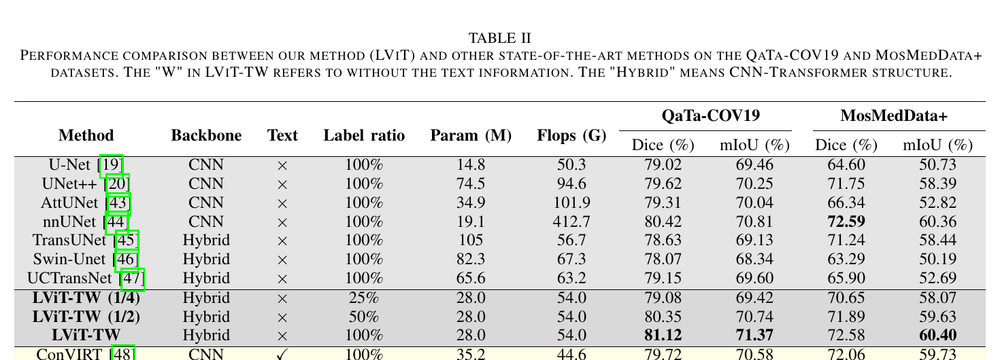
Table 2 — LViT vs U-Net / nnUNet / LAVT
⭐ Con số ăn tiền: LViT-T chỉ với ¼ nhãn đạt 80.95 Dice — cao hơn nnUNet dùng đủ nhãn (80.42). Bản full đạt 83.66 / 75.11.
Đây là bảng kết quả then chốt — Table 2 của paper. LViT-T bản đầy đủ đạt Dice 83.66 và mIoU 75.11 trên QaTa, cao hơn U-Net, nnUNet và cả LAVT vốn nặng 118 triệu tham số. Con số ăn tiền nhất: LViT-T chỉ dùng một phần tư nhãn đã đạt 80.95, vẫn nhỉnh hơn nnUNet dùng đủ nhãn ở mức 80.42. Nghĩa là thêm ngôn ngữ giúp giảm mạnh nhu cầu nhãn — đúng vấn đề annotation đắt đỏ nêu ở đầu.
KẾT QUẢ · ĐỊNH TÍNH
Mắt thường cũng thấy: LViT-T ít mis-segmentation hơn các SOTA.
So sánh trực quan trên QaTa-COV19 & MosMedData+ với 6 baseline (UNet++, nnUNet, UCTransNet, TGANet, GLoRIA). Trong các ô đỏ, mask của LViT-T sạch và bám ground truth hơn — tín hiệu text làm prior ngữ nghĩa, giảm dương tính giả ngoài vùng giải phẫu hợp lý.
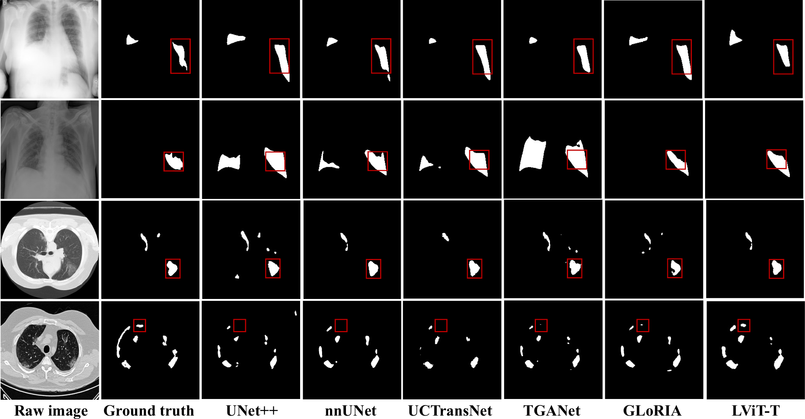
Fig. 4 — Raw · Ground truth · UNet++ · nnUNet · UCTransNet · TGANet · GLoRIA · LViT-T (ô đỏ: vùng LViT-T chính xác hơn)
Ngoài số liệu, kết quả định tính cũng thuyết phục — Figure 4. Từ trái sang: ảnh gốc, ground truth, rồi lần lượt UNet++, nnUNet, UCTransNet, TGANet, GLoRIA, và LViT-T. Nhìn các ô đỏ: các baseline mis-segment nhiều hơn — chỗ thừa chỗ thiếu; LViT-T bám ground truth sát nhất. Cơ chế: tín hiệu text hoạt động như prior ngữ nghĩa, ràng buộc dự đoán vào vùng giải phẫu hợp lý nên giảm dương tính giả.
ABLATION
Bóc từng module: mỗi cái đều kéo điểm lên.
Từ baseline CNN, thêm lần lượt PLAM → EPI → Text integration, Dice leo dần tới đỉnh 83.66%.
BASELINE
80.42%
CNN thuần (nnUNet-level).
+ PLAM
↑
Attention hai nhánh, bù mất mát cục bộ.
+ EPI
80.95%
Bán giám sát (thí nghiệm 25% nhãn).
+ TEXT
+2.5%
Hiệu ứng "neo" ngữ nghĩa — đóng góp lớn nhất.
ĐỈNH
83.66%
LViT-T full.
Ý NGHĨA
Ba module bổ trợ
PLAM = tinh chỉnh cục bộ · EPI = học bán giám sát · Text = prior ngữ nghĩa.
Ablation chứng minh từng module đều đóng góp. Bắt đầu từ baseline CNN 80.42 — ngang nnUNet. Thêm PLAM: attention hai nhánh bù đặc trưng cục bộ. Thêm EPI: trong thiết lập 25% nhãn đạt 80.95. Thêm Text integration: hiệu ứng neo ngữ nghĩa, đóng góp khoảng 2.5% Dice — thành phần lớn nhất. Cộng dồn lên đỉnh 83.66 của bản full. Tóm lại: PLAM tinh chỉnh cục bộ, EPI khai thác dữ liệu chưa nhãn, còn Text cung cấp prior ngữ nghĩa dẫn hướng.
GAP 1
Nâng phép cộng thô lên Cross-Attention.
Thay phép cộng ảnh + text bằng cơ chế cross-attention để fusion sâu và ngữ cảnh hơn — ánh xạ từng chữ ("lower left") tới toạ độ không gian chính xác.
Hiện tại
x + text — additive fusion: text tác động đồng đều toàn ảnh, không định vị được.
Tương lai
Cross-attention — ánh xạ từng cụm từ tới các vùng không gian tương ứng.
Ba hướng phát triển nhóm đề xuất. Thứ nhất: nâng cấp cơ chế fusion. Hiện tại LViT dùng additive fusion, coi text như một dịch chuyển đặc trưng đồng đều trên toàn ảnh nên không định vị được. Nếu thay bằng cross-attention, mô hình có thể ánh xạ từng cụm từ như "lower left" tới các vùng không gian tương ứng, cho fusion sâu và có ngữ cảnh vị trí hơn.
GAP 2
Tự động sinh mô tả y tế bằng VLM.
Bỏ nút thắt chú thích thủ công của chuyên gia: dùng Medical Vision-Language Model (LLaVA-Med / BioCLIP) để auto-prompting tức thời.
Hiện tại
Ảnh → bác sĩ → viết mô tả tay → LViT. Phụ thuộc sức người, chậm.
Tương lai
Ảnh → VLM (LLaVA-Med) → prompt tức thì → LViT. Pipeline tự động, scale ngay.
Hướng thứ hai giải nút thắt dữ liệu. Hiện text vẫn phải do chuyên gia soạn thủ công — chậm và phụ thuộc nguồn lực người. Đề xuất tích hợp một Medical Vision-Language Model như LLaVA-Med hoặc BioCLIP để tự sinh mô tả trực tiếp từ ảnh. Khi đó toàn bộ pipeline trở thành end-to-end tự động và có khả năng mở rộng, không còn phụ thuộc chú thích thủ công.
GAP 3
Chuyển sang Swin Transformer để giữ cấu trúc 2D.
ViT 1D làm phẳng patch → mất tính kề nhau không gian. Swin giữ nguyên lưới 2D, trích đặc trưng phân cấp cho ranh giới y tế phức tạp.
Hiện tại
1D ViT flatten — làm phẳng patch thành chuỗi, mất tính kề nhau không gian 2D.
Tương lai
2D Swin — giữ cấu trúc lưới 2D, trích đặc trưng phân cấp theo cửa sổ trượt.
Hướng thứ ba về backbone Transformer. ViT hiện tại làm phẳng patch 2D thành chuỗi 1D, làm mất tính kề nhau không gian giữa các patch. Đề xuất thay bằng Swin Transformer vốn xử lý native 2D theo cửa sổ trượt, giữ nguyên cấu trúc lưới và trích đặc trưng phân cấp — phù hợp với ranh giới tổn thương y tế phức tạp, đa tầng.
KẾT LUẬN
Language + Vision thắng Vision đơn thuần.
LViT tích hợp ngôn ngữ vào segmentation ảnh y tế qua các module text-augmented, đạt SOTA trên nhiều bộ dữ liệu và giảm mạnh nhu cầu nhãn.
Đóng góp — text là modality bổ trợ dẫn hướng trích đặc trưng, chữa cảnh khan hiếm nhãn.
Gap mở ra — cross-attention · auto-prompting bằng VLM · Swin 2D.
Cảm ơn thầy và các bạn — Q&A.
Kết lại: LViT chứng minh ngôn ngữ dẫn hướng cho segmentation ảnh y tế là khả thi và hiệu quả — đạt SOTA trên nhiều bộ dữ liệu, đồng thời giảm mạnh nhu cầu nhãn nhờ bán giám sát. Ba hướng mở ra là cross-attention thay phép cộng, tự động sinh text bằng VLM, và chuyển sang Swin 2D. Thông điệp gọn: Language cộng Vision thắng Vision đơn thuần. Cảm ơn thầy và các bạn, nhóm xin nhận câu hỏi.